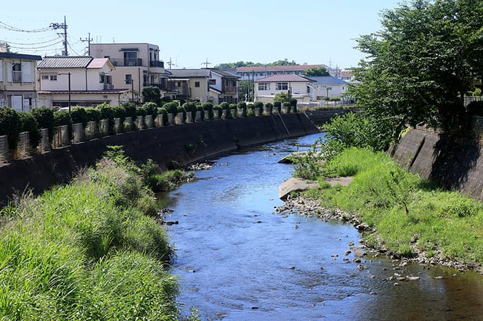
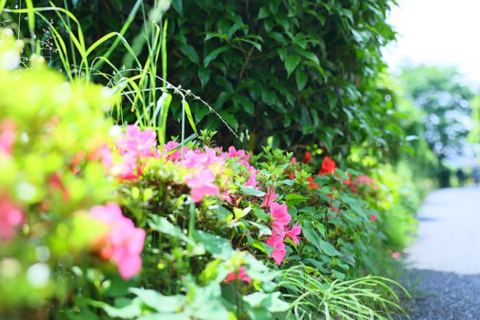
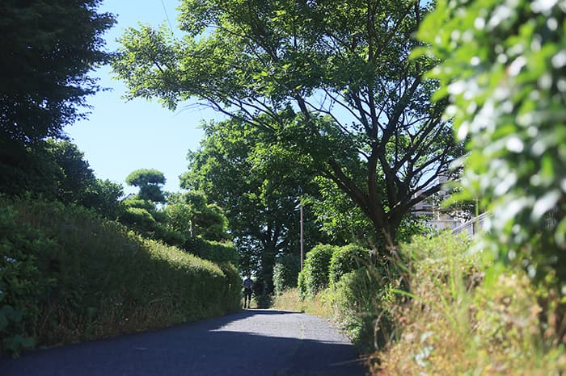

※1 現地周辺の街並み（徒歩2分・約140m）
※2 茨山稲荷神社（徒歩3分・約230m）
※1
※2
静けさと緑と開放感。
豊かさの本質がここにある。
その場所は、駅前や幹線道路から
程よく距離を置くことで得られる緑に彩られた静けさに包まれています。
その場所は、戸建て住宅街だからこそ得られる開放感が広がっています。
静けさと緑と開放感。
ここには、家族の未来を託す豊かな暮らしの本質が息づいています。
現地7階相定の高さより、南東方向を撮影（2022年7月撮影）
大通りから奥まった
穏やかで開放的な立地。
国道から350m離れた閑静な住宅街の一画。
周辺には並木道や公園をはじめとした、豊かな緑が残されており、また周辺には高い建物が少ないため、穏やかな暮らしを実現する街並が広がっています。
現地周辺の街並み
（徒歩2分・約140m）
現地周辺の街並み
（徒歩2分・約140m）
現地周辺概念イラストマップ
ハナミズキやケヤキ並木が
街並みに彩りを添える
アプローチ。
駅から住まいへは平坦な道が続くフラットアプローチ。閑静な住宅街を抜けるルート上には、美しいハナミズキ、東京環状（国道16号）のルートはケヤキの並木が潤いを与えます。
現地周辺の街並み
（徒歩2分・約100m）
現地周辺の街並み
（徒歩11分・約850m）
現地周辺の街並み
（徒歩7分・約490m）
永住にふさわしい、
ゆったりとした住宅街に。
「リーフィアレジデンス相模大野ヴェール」が位置するのは、居住に適した第一種中高層住居専用地域の住居系エリア。現地周辺一帯は戸建て住宅が家並みを描き、落ち着いた街並みが続きます。穏やかな雰囲気が漂い、人々のゆったりとした暮らしが感じられる生活環境です。
用途地域概念図
法規制に守られた
住宅のための良好なエリア
建築物の用途を制限することで都市の良好な環境と秩序ある市街地の形成を図るもの、それが用途地域です。用途地域は都市計画法によって定められ、建築物の高さや建てられる施設など制限があり、商業地域や工業地域で建てられることができても、住居専用地域では許可されない建築物があります。計画地は大型の店舗や工場などの建設が制限されており、将来にわたり、穏やかな住環境が維持されていくことが期待されます。
※記載の用途地域は一例です。面積要件等により左表の制限に該当しない場合があり、すべての制限について掲載したものではありません。詳しくは係員までお問合せください。
※掲載の用途地域概念図はMapExpert用途地域マップ及び住宅地図を基に描き起こしたもので実際とは多少異なります。2022年8月現在のもので法改正により、将来変わる可能性があります。
※記載の用途地域は一例です。面積要件等により左表の制限に該当しない場合があり、すべての制限について掲載したものではありません。詳しくは係員までお問合せください。
※掲載の用途地域概念図はMapExpert用途地域マップ及び住宅地図を基に描き起こしたもので実際とは多少異なります。2022年8月現在のもので法改正により、将来変わる可能性があります。
［×］建築不可［△］床面積3,000㎡以下［●］2階以上は不可［▲］個室付浴場業等を除く
①用品販売店舗、喫茶店、理髪店及び建具屋等のサービス業用店舗のみ。2階以上は不可。
②①に加えて、物品販売店舗、飲食店、損保代理店、銀行の支店、宅地建物取引業等のサービス業用店舗のみ。
③床面積1,500㎡以下。2階以上は不可。
徒歩圏に様々な生活利便が
集まる暮らしやすい生活環境。
駅周辺に大型施設があるのはもちろんだが、計画地の周辺には、スーパーやドラッグストアなどの生活利便施設が集積。計画地の周辺には、スーパーやドラッグストアなどの生活利便施設が集積。また小学校や病院、公園などにもアクセスしやすく、子育て世帯が暮らしやすい環境となっています。
スーパー三和 上鶴間店
（徒歩7分・約520m）
ウェルパーク 上鶴間店
（徒歩4分・約320m）
クリエイトS・D
相模原上鶴間谷口店
（徒歩8分・約640m）
谷口幼稚園
（徒歩11分・約840m）
相模大野
メディカルヴィレッジ
（徒歩6分・約470m）
谷口小学校
（徒歩6分・約450m）
谷口中学校
（徒歩7分・約500m）
谷口南台公園
（徒歩5分・約360m）
スローで心地いい空気が流れる
「境川ゆっくりロード」
東京都と神奈川県の境界を流れる境川の河岸に整備された歩行者と自転車の専用通路。潤い豊かな水辺の景観が心地いい道路は、町田と南町田グランベリーパーク方面につながっており、散策やサイクリングを楽しみながら、目的地へアプローチできます。
-

境川
（徒歩10分・約780m） -

境川緑道
（徒歩10分・約780m） -

境川緑道
（徒歩10分・約780m） -

境川ゆっくりロード
（徒歩10分・約780m）
「相模大野中央公園」をはじめ、
身近な憩いの場となる
公園が充実。
約2.7haの広さを誇る「相模大野中央公園」は、「花と水と緑」をテーマにした近隣のオアシス。季節の花が咲く花壇や相模湾をイメージした池をはじめ、遊具や砂場のあるチビッコ広場等が充実しています。この他にも周辺には、「相模大野7丁目アルファベット公園(徒歩9分・約690m)」などの小規模な公園も数多く点在。身近な憩いの場や子どもの遊び場として日常的に利用できます。
Image photo
Image photo
相模大野中央公園(徒歩約18分・1,440m)
相模大野中央公園(徒歩約18分・1,440m)
Image photo
Image photo